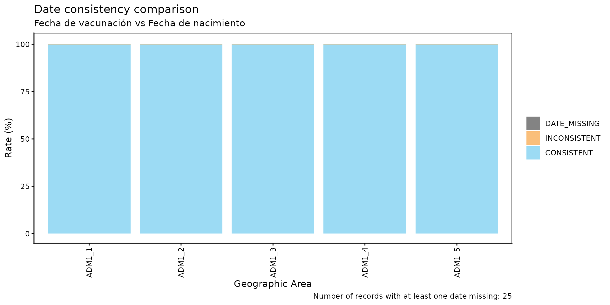
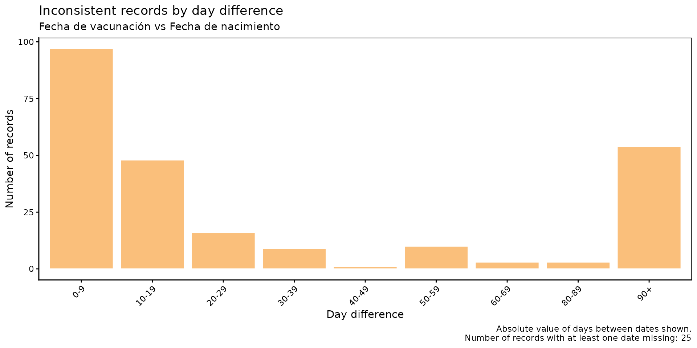
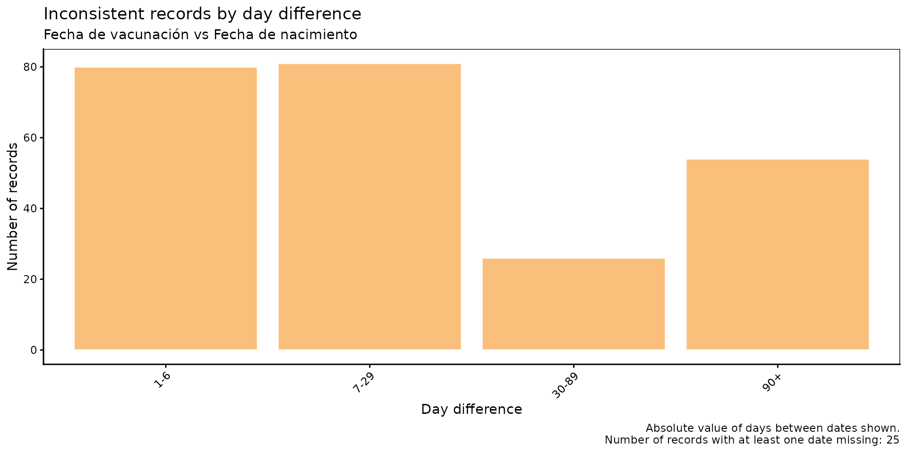

Comparación de consistencia de fechas
OPS/CIM
2 de junio de 2026
Source:vignettes/articles/es/date_consistency_comparison_es.Rmd
date_consistency_comparison_es.RmdFundamento
Los Registros Nominales de Vacunación electrónicos (RNVe) suelen contener campos de fecha con restricciones lógicas entre sí. Un ejemplo común es la relación entre la fecha de vacunación y la fecha de nacimiento: un evento de vacunación no puede ocurrir antes de que la persona haya nacido. Cuando estas violaciones existen en los datos, indican errores de captura o problemas de vinculación de registros que pueden sesgar los análisis posteriores.
El módulo de comparación de consistencia de fechas permite identificar, cuantificar y visualizar de forma sistemática estas inconsistencias entre cualquier par de variables de fecha en el RNVe.
Nota
Todas las funciones utilizadas para los análisis de comparación de consistencia de fechas dentro de PAHOabc comienzan con el prefijo
dcc_.
Glosario
Divisiones político-geográficas
A lo largo de esta viñeta se hace referencia a distintos niveles de división político-geográfica. Estos niveles son definidos por cada país o territorio y pueden recibir nombres diferentes. PAHOabc no depende de esos nombres locales; por eso, el usuario debe recodificar sus variables para ajustarlas a la estructura que utiliza el paquete.
En concreto, PAHOabc puede distinguir tres niveles administrativos que, listados del nivel superior al inferior, son: ADM0, ADM1 y ADM2.
- ADM0: El país. Este es el nivel administrativo más alto.
- ADM1: La primera subdivisión geográfica del país. ADM0 contiene varias subdivisiones ADM1.
- ADM2: La segunda subdivisión geográfica del país. Cada ADM1 contiene varias subdivisiones ADM2.
Uso
Cargar los datos
Las funciones de este módulo requieren que proporcione su RNVe en el formato estándar de PAHOabc.
RNVe
El conjunto de datos pahoabc::pahoabc.EIR proporciona
una tabla nominal simulada con eventos individuales de vacunación de un
Registro Nominal de Vacunación electrónico (RNVe). Cada fila corresponde
a una vacunación de una persona.
pahoabc.EIR %>% head() %>% kable(caption = "Ejemplo de Registro Nominal de Vacunación electrónico")| ID | date_birth | date_vax | ADM1_residence | ADM2_residence | ADM1_occurrence | ADM2_occurrence | dose |
|---|---|---|---|---|---|---|---|
| 191997 | 2023-08-08 | 2023-12-26 | ADM1_4 | ADM2_4_35 | ADM1_4 | ADM2_4_35 | DTP2 |
| 212189 | 2023-12-20 | 2023-12-26 | ADM1_5 | ADM2_5_61 | ADM1_5 | ADM2_5_61 | BCG RN |
| 118063 | 2022-09-15 | 2023-12-26 | ADM1_2 | ADM2_2_5 | ADM1_2 | ADM2_2_5 | DTP1 |
| 118063 | 2022-09-15 | 2023-12-26 | ADM1_2 | ADM2_2_5 | ADM1_2 | ADM2_2_5 | YFV1 |
| 130751 | 2022-10-27 | 2023-12-12 | ADM1_5 | ADM2_5_55 | ADM1_5 | ADM2_5_55 | YFV1 |
| 136532 | 2021-09-21 | 2023-12-26 | ADM1_3 | ADM2_3_12 | ADM1_3 | ADM2_3_12 | SRP1 |
-
ID: Número único de identificación de la persona. - Fecha de nacimiento (
date_birth): Fecha de nacimiento de la persona. - Fecha de vacunación (
date_vax): Fecha del evento de vacunación. -
ADM1_residence/ADM2_residence: Primer y segundo nivel administrativo geográfico de residencia. - Dosis (
dose): Variable combinada que representa el tipo de vacuna y su número de dosis correspondiente (p. ej., DTP1).
Análisis de comparación de consistencia de fechas
Flujo de trabajo esperado
El conjunto de funciones dcc_ contiene cuatro funciones
que trabajan en conjunto:
-
dcc_rate()— calcula las tasas de consistencia agregadas por nivel geográfico. -
dcc_barplot()— visualiza el resultado dedcc_rate()como un gráfico de barras apiladas. -
dcc_inconsistent()— lista los registros inconsistentes e incompletos de forma individual, con su diferencia en días. -
dcc_inconsistent_plot()— visualiza la distribución de las diferencias en días para los registros inconsistentes.
La figura a continuación muestra el flujo de trabajo esperado.

Paso 1 — Calcular las tasas de consistencia con
dcc_rate()
dcc_rate() compara dos variables de fecha en el RNVe y
devuelve, para cada unidad geográfica, el conteo y el porcentaje de
registros clasificados como CONSISTENT,
INCONSISTENT o DATE_MISSING.
En este ejemplo se verifica si date_vax (date_1, la
fecha más reciente) es consistente con date_birth (date_2,
la fecha más temprana) a nivel ADM1.
rate_df <- dcc_rate(
data.EIR = pahoabc.EIR,
date_1 = "date_vax",
date_2 = "date_birth",
geo_level = "ADM1"
)
rate_df %>% kable(digits = 2, caption = "Tasas de consistencia de fechas por ADM1")| ADM1 | consistency | n | total | rate |
|---|---|---|---|---|
| ADM1_1 | CONSISTENT | 14046 | 14058 | 99.91 |
| ADM1_1 | DATE_MISSING | 2 | 14058 | 0.01 |
| ADM1_1 | INCONSISTENT | 10 | 14058 | 0.07 |
| ADM1_2 | CONSISTENT | 75128 | 75165 | 99.95 |
| ADM1_2 | INCONSISTENT | 37 | 75165 | 0.05 |
| ADM1_3 | CONSISTENT | 332868 | 333038 | 99.95 |
| ADM1_3 | DATE_MISSING | 22 | 333038 | 0.01 |
| ADM1_3 | INCONSISTENT | 148 | 333038 | 0.04 |
| ADM1_4 | CONSISTENT | 45797 | 45830 | 99.93 |
| ADM1_4 | DATE_MISSING | 1 | 45830 | 0.00 |
| ADM1_4 | INCONSISTENT | 32 | 45830 | 0.07 |
| ADM1_5 | CONSISTENT | 24583 | 24597 | 99.94 |
| ADM1_5 | INCONSISTENT | 14 | 24597 | 0.06 |
Parámetros aceptados
-
data.EIR: Tabla del RNVe en formato PAHOabc. -
date_1: Nombre de la variable de fecha que se verifica (la fecha cronológicamente más reciente). -
date_2: Nombre de la variable de fecha de referencia (la fecha cronológicamente más temprana). -
geo_level:"ADM0"(predeterminado),"ADM1"o"ADM2".
Paso 2 — Visualizar las tasas con dcc_barplot()
El resultado de dcc_rate() puede pasarse directamente a
dcc_barplot() para producir un gráfico de barras apiladas
con el desglose de categorías de consistencia por unidad geográfica.
dcc_barplot(
data = rate_df,
date_1_name = "Fecha de vacunación",
date_2_name = "Fecha de nacimiento"
)
Parámetros aceptados
-
data: Resultado dedcc_rate(). -
date_1_name: Etiqueta paradate_1en el subtítulo del gráfico. Valor predeterminado:"date 1". -
date_2_name: Etiqueta paradate_2en el subtítulo del gráfico. Valor predeterminado:"date 2". -
within_ADM1: Vector de caracteres para filtrar unidades ADM1 específicas cuandogeo_level = "ADM2". Valor predeterminado:NULL. -
plot_missing: Booleano. Si esTRUE(predeterminado), los registrosDATE_MISSINGse muestran como un segmento separado para que todas las barras sumen 100 %.
Paso 3 — Inspeccionar los registros inconsistentes con
dcc_inconsistent()
dcc_inconsistent() devuelve una tabla a nivel de
registro con todas las entradas INCONSISTENT y
DATE_MISSING, incluyendo la diferencia en días entre las
dos fechas.
inconsistent_df <- dcc_inconsistent(
data.EIR = pahoabc.EIR,
date_1 = "date_vax",
date_2 = "date_birth"
)
inconsistent_df %>% head(10) %>% kable(caption = "Muestra de registros inconsistentes e incompletos")| ID | dose | date_birth | date_vax | consistency | diff |
|---|---|---|---|---|---|
| 90618 | BCG RN | 2022-12-21 | 2022-02-25 | INCONSISTENT | -299 days |
| 212688 | BCG RN | 2023-12-28 | 2023-12-02 | INCONSISTENT | -26 days |
| 90924 | BCG RN | 2022-03-06 | 2022-03-05 | INCONSISTENT | -1 days |
| 90984 | DTP2 | 2022-06-30 | 2022-04-27 | INCONSISTENT | -64 days |
| 90994 | BCG RN | 2022-02-20 | 2022-02-19 | INCONSISTENT | -1 days |
| 91235 | YFV1 | NA | 2022-06-13 | DATE_MISSING | NA days |
| 91441 | BCG RN | 2022-02-16 | 2022-02-10 | INCONSISTENT | -6 days |
| 91537 | BCG RN | 2022-04-02 | 2022-02-03 | INCONSISTENT | -58 days |
| 65055 | BCG RN | 2022-02-04 | 2022-02-03 | INCONSISTENT | -1 days |
| 92001 | BCG RN | 2022-03-17 | 2022-03-12 | INCONSISTENT | -5 days |
Parámetros aceptados
-
data.EIR: Tabla del RNVe en formato PAHOabc. -
date_1: Nombre de la variable de fecha que se verifica. -
date_2: Nombre de la variable de fecha de referencia.
La columna diff reporta date_1 - date_2 en
días. Los valores negativos indican que date_1 precede a
date_2 (es decir, la inconsistencia). Esta tabla puede
exportarse para flujos de corrección a nivel de registro.
Paso 4 — Visualizar la distribución de las diferencias en días con
dcc_inconsistent_plot()
dcc_inconsistent_plot() produce un histograma de las
diferencias en días en valor absoluto para los
registros inconsistentes, agrupados en intervalos personalizables. Esto
permite caracterizar la gravedad de las inconsistencias: diferencias
pequeñas pueden reflejar errores de captura, mientras que diferencias
grandes pueden indicar problemas sistemáticos más serios.
dcc_inconsistent_plot(
data.EIR = pahoabc.EIR,
date_1 = "date_vax",
date_2 = "date_birth",
date_1_name = "Fecha de vacunación",
date_2_name = "Fecha de nacimiento"
)
Parámetros aceptados
-
data.EIR: Tabla del RNVe en formato PAHOabc. -
date_1: Nombre de la variable de fecha que se verifica. -
date_2: Nombre de la variable de fecha de referencia. -
date_1_name: Etiqueta paradate_1en el subtítulo del gráfico. Valor predeterminado:"date 1". -
date_2_name: Etiqueta paradate_2en el subtítulo del gráfico. Valor predeterminado:"date 2". -
day_groups: Lista de pares numéricosc(inferior, superior)que definen los intervalos del histograma. El último intervalo siempre se extiende hastaInfy se etiqueta como"X+". Valor predeterminado: intervalos de 10 días de 0 a 100.
Para usar intervalos personalizados — por ejemplo, mayor resolución para diferencias pequeñas:
dcc_inconsistent_plot(
data.EIR = pahoabc.EIR,
date_1 = "date_vax",
date_2 = "date_birth",
date_1_name = "Fecha de vacunación",
date_2_name = "Fecha de nacimiento",
day_groups = list(c(0, 1), c(1, 7), c(7, 30), c(30, 90), c(90, 180))
)
Interpretación
El eje horizontal muestra el número de días entre las fechas
inconsistentes. Se debe investigar cuáles son las causas más frecuentes
de las inconsistencias en cada intervalo. Por ejemplo, los registros con
grandes diferencias pueden deberse a errores de tipeo durante la captura
de datos (p. ej., cuando una fecha se escribe como
2022-02-25 en lugar de 2022-12-25). Sin
embargo, también pueden señalar problemas sistemáticos más serios.
Resumen
El módulo dcc_ ofrece una cadena completa de análisis
para evaluar la consistencia de fechas en datos del RNVe. Partiendo de
dcc_rate() para una visión geográfica general, pasando por
dcc_barplot() para la visualización, hasta
dcc_inconsistent() para la inspección a nivel de registro y
dcc_inconsistent_plot() para caracterizar la magnitud de
los errores, el conjunto de funciones provee a los gestores de datos y
analistas de salud pública las herramientas necesarias para detectar,
cuantificar y priorizar correcciones de calidad de datos antes de
cualquier análisis posterior.